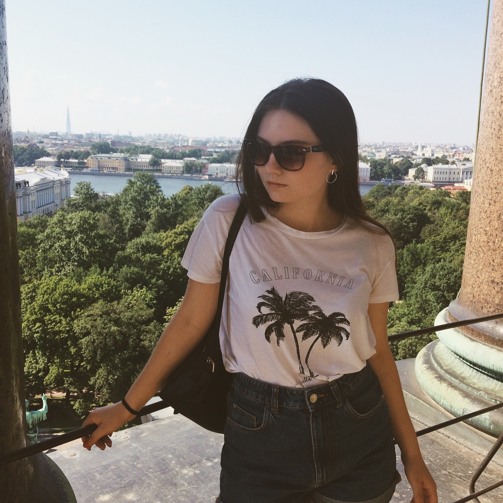
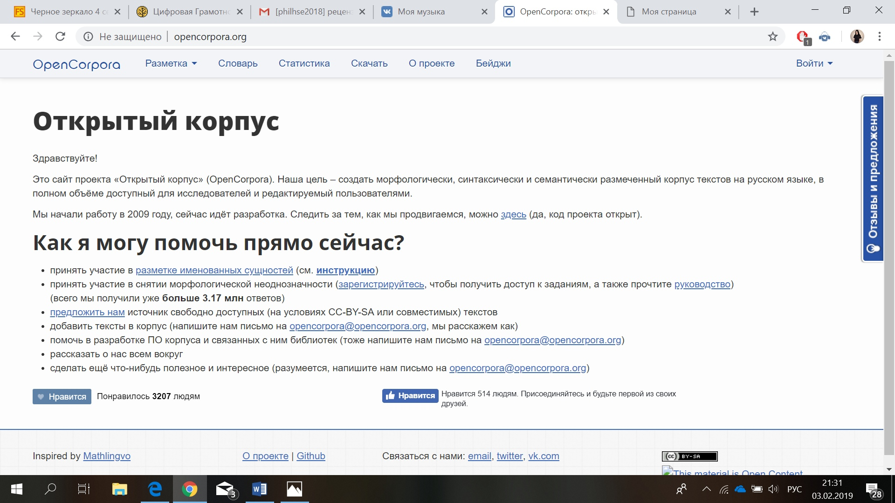

Чернявская Ирина Викторовна, Высшая школа экономики, 1 курс, бакалавриат, филология.
Научные интересы: языки, литература.
О себе: люблю спорт (теннис, горные лыжи, танцы), занималась в студии творческого развития. Переехала из Тольятти в Москву полгода назад, но живу в Дубках) До сих пор не знаю, какому делу хочу посвятить себя, и нахожусь в состоянии тотальной неопределенности.
Современные технологии во многом помогают филологам. Так, главный источник для информации - это филологические ресурсы интернета (электронные энциклопедии. словари, сайты библиотек). Просматривая данные сайты, филологи остаются в курсе всего, что происходит в научном мире. Кроме того, именно в интернете мы узнаем о научных мероприятиях и встречах.
Сайт проекта "Открытый корпус"
Из достоинств: сайт достаточно информативен и предоставляет все, что запрашивается по теме морфологии, семантики и синтаксиса.
Из недостатков: на данном ресурсе тяжело ориентироваться, и чтобы найти нужную информацию необходимо приложить некоторые усилия. Кроме того, внешний вид сайта не приносит удовольствия от пребывания там.